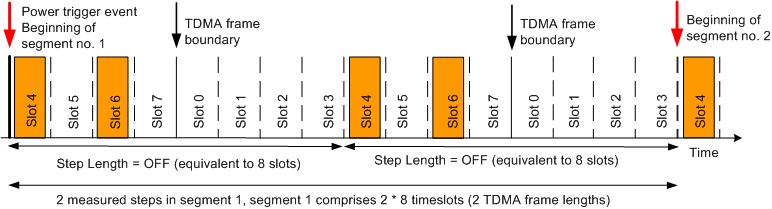

In principle, the list mode is compatible with any MS signal configuration. For multislot configurations, a special frame pattern mode is available. In this mode, the R&S CMW can measure an arbitrary number of (not necessarily equidistant) slots per 8-slot period. The first 8-slot period starts with the trigger event; it does not have to coincide with the TDMA frame boundary of the measured GSM signal.

The frame pattern mode is active as long as the step length is set to OFF. An 8-bit binary parameter describes the measured slots within each consecutive 8-slot period.
Example: The following commands configure a frame pattern mode according to the figure above (measured slots: no. 1 and 3 after the power trigger event).
CONFigure:GSM:MEAS:MEValuation:LIST:SLENgth OFF
CONFigure:GSM:MEAS:MEValuation:LIST:SEGMent1:PVTime 5, ON, #B10100000